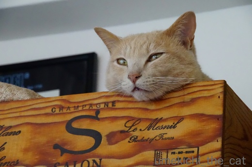
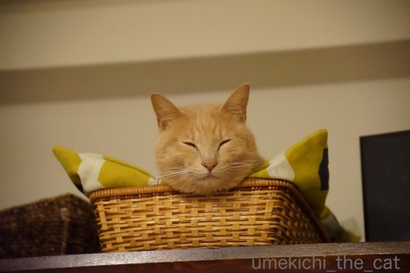
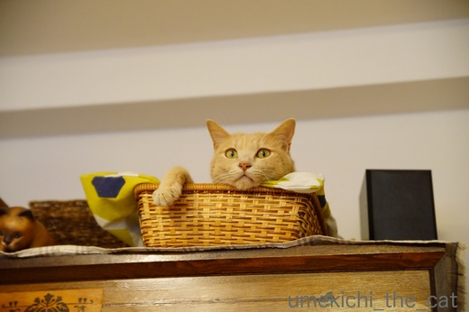
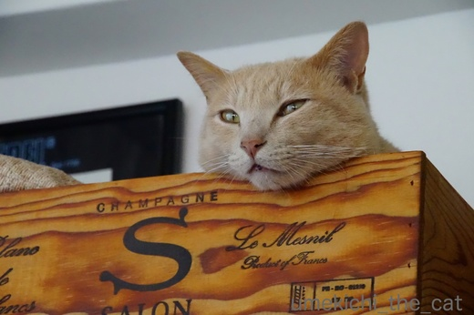
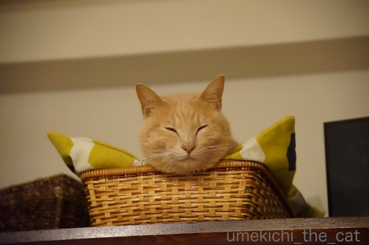
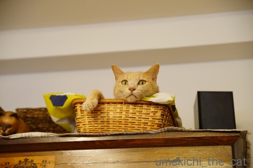

間違い探しの写真 [梅吉]
我が家のダイニングテーブルの横の茶箪笥の上には梅吉のベッドが２つ。
私たちの夕食時、梅吉はここで寝ていることが多いのですが
お酒が入って（夕食＝酒盛り、な我が家）可愛い愛猫がすぐそばにいるとなると
ついつい写真を撮りたくなるもので・・・・・


ねむねむのお顔からお口がちょっと開いた寝顔が可愛かったとか


さっきまで見えていたお顔が見えなくなってお耳とお手手になったのが可愛いとか



お目目ぱっちりからの寝顔がかわいい、寝顔が二枚あるのはおっとアングルと私アングル、とか。
まるで間違い探しごとく同じ様な写真がライブラリーに満載になります(⌒_⌒;


あ、こっち見た![[黒ハート]](https://blog.ss-blog.jp/_images_e/136.gif)

白目ー！白目ーー！！


これぞ、間違い探しww

なんとも言えない表情がたまらないよねーとか、
同じ様な写真を撮り続ける酔っ払い、おそるべし！！
これもある意味定点観測みたいなものでしょうか。
定点観測にお付き合いくださりありがとうございますm(_ _)m
 ↑ガブッと一押し↑
↑ガブッと一押し↑
100均セリアでみつけた小皿。
白いお皿はお醤油を入れると
柄が浮き上がってきますよー。
取り皿にはちょっと小さくお刺身のお醤油皿にちょうど良いくらいの大きさです。
人気ですぐ売り切れちゃう物もあるんですって。
私たちの夕食時、梅吉はここで寝ていることが多いのですが
お酒が入って（夕食＝酒盛り、な我が家）可愛い愛猫がすぐそばにいるとなると
ついつい写真を撮りたくなるもので・・・・・


ねむねむのお顔からお口がちょっと開いた寝顔が可愛かったとか


さっきまで見えていたお顔が見えなくなってお耳とお手手になったのが可愛いとか



お目目ぱっちりからの寝顔がかわいい、寝顔が二枚あるのはおっとアングルと私アングル、とか。
まるで間違い探しごとく同じ様な写真がライブラリーに満載になります(⌒_⌒;


あ、こっち見た

白目ー！白目ーー！！


これぞ、間違い探しww

なんとも言えない表情がたまらないよねーとか、
同じ様な写真を撮り続ける酔っ払い、おそるべし！！
これもある意味定点観測みたいなものでしょうか。
定点観測にお付き合いくださりありがとうございますm(_ _)m
100均セリアでみつけた小皿。
白いお皿はお醤油を入れると
柄が浮き上がってきますよー。
取り皿にはちょっと小さくお刺身のお醤油皿にちょうど良いくらいの大きさです。
人気ですぐ売り切れちゃう物もあるんですって。

カフェオレ色の梅吉

梅吉 2023年8月10日 永眠


梅吉と出会った譲渡会

犬猫の理由なき殺処分ゼロ
妄想広告
UMEKICHI 光

爆発的に早い！
時々攻撃的！
Thanks to Mr.Boss365
爆発的に早い！
時々攻撃的！
Thanks to Mr.Boss365

梅吉くん目を閉じるとなんとも福々しい顔になりますね。癒されるわ～(*^^*)
by palpal (2017-08-30 16:04)
白目にはなってないのね＾＾可愛いねえ
夕食＝酒盛り！！！おお、同志よ！
酒盛りしながら可愛い猫がいりゃ最高っすね！
by じゅらまろ (2017-08-30 16:25)
ふふっ♪ 撮りたくなっちゃう気持ち分かります(*^_^*)
我が家も夫婦そろってパシャパシャ・・・
そして動いていないのに連写とか（笑
なので間違い探しをするのも難しいくらい
同じ写真がいっぱいですよ！
by きぃ (2017-08-30 16:32)
梅吉さん目を閉じると微笑んでいますね~。おとーさんとおかーさんと3人の和やかなひとときが嬉しいんですね~。梅吉さんの横にもう一匹猫(?)がいるような気がして気になりますけど。
by zombiekong (2017-08-30 17:51)
ちょっとした仕草に萌えますね～
by みぃにゃん (2017-08-30 19:26)
梅吉さんの寝顔を見ているだけで、幸せな気持ちになります(^^♪
白いお皿、欲しいです。
by riverwalk (2017-08-30 20:00)
酔っているにしてはピントが合っていますね〜（アッ、カメラが良いのかww）
3人家族の楽しさが伝わってきます。
by kiki (2017-08-30 21:21)
寛いでいる梅吉さんの表情、癒されますね～♪
間違い探し・・・、あっ、分かりました！！^^;
白い小皿、なるほど。そうすれば模様が浮き上がってくるのですね。^^)
by yes_hama (2017-08-30 21:29)
可愛い～！
間違い探し？ うふふ、どれもかわいくて見逃せない瞬間ですね♪
梅吉くんは、ちょっと困ったような目つきが特徴的だと思うんですが～
目を細めた笑顔が優しくって大好き＾＾
福を呼びそうですね＾＾
by sana (2017-08-30 23:25)
梅吉君、お風呂入っているようにも見えます。
撮る方も、撮られる方もリラックスモードのようですね。
by うめむす (2017-08-31 01:19)
私の場合、違う日に撮ってるのに
似てる写真が多いです＾＾；
by ぽちの輔 (2017-08-31 06:39)
酒も飲んでないのに、ひたすら同じような写真を撮りまくる私ですw
かみさんには「似た写真を量産してどうするの？」と聞かれますが、
似た写真を撮りたいわけではなく、ニャンズが警戒してるから似た写真しか
撮れない！とは言いたくない私です(ｰ ｰ;)
by ニッキー (2017-08-31 07:41)
むふふふ
わかるわかる。お酒が入ると近くにいる被写体を
延々と撮り続けますよね(笑)
翌日、酔いが覚めてスマホを見ると
同じ写真がいっぱい！！！ｗｗ
梅吉君の白目、今回もNICE!!
by リュカ (2017-08-31 09:50)
わかる、わかる、わかりますよ～♪
何をやっても可愛い、愛おしい♡ 最高の酒の肴ですねーヽ(〃^・^〃)ﾉ ﾁｭｯ♪
お皿、いいー！セリア優秀だ！
by Ginger (2017-08-31 12:48)
梅吉くんを肴に…(^^)フフ
ギャラを貰わなきゃね〜梅吉くん！！
by も〜 (2017-08-31 14:05)
うふふ。想像できますよ(^-^)
今の可愛い顔見た？見てないの～～っヽ(`Д´)ﾉﾌﾟﾝﾌﾟﾝ
〇〇にはこんな可愛い顔する？とか、争ったりｗ
撮った写真もカメラのモニターで見てよ！見てよ！
話題は尽きませんよね。
梅吉くんのお目目には、そんな仲睦まじく晩酌してるおとーさんと
おかーさんの姿が焼きつけられているのね。
付き合いきれなくなった時は、ふぁあぁぁ。白目寝で乗り切ろうｗ
by emi (2017-08-31 15:27)
梅吉さんを肴に酔っぱらう、最高の宴ですね(*^▽^*)
何をやってもかわいいから、写真が増えちゃうのは仕方ない！！
シャンパンのベッドが素敵です♪
セリアのお皿、真ん中の猫耳の持ってます^^
醤油で浮き出るお皿ほしい～明日帰りに寄っちゃおう。
by ゆきち (2017-08-31 19:38)
梅吉さんは眠眠だったのですね(^^)
by ma2ma2 (2017-08-31 21:20)
二枚目の写真の梅吉さんは、笑ってるみたい＾＾
うちも同じ様な違うような写真を、
ついつい沢山撮ってしまいます＾＾
あ～！さっそくセリア行かなくちゃ♪
by マーヤ (2017-09-01 01:17)
梅吉さん、いいお顔ですねヾ(*´∀｀*)ﾉ
どんなお顔も可愛いです！！
by sumi-cyan (2017-09-01 03:08)
先生が愛されているのがよくわかりました。＾＾
by KENT0mg (2017-09-01 16:44)
palpalさん＞福も招いて欲しいわー！
あ、癒されていること自体が福だわね(๑˃̵ᴗ˂̵)و
じゅらまろさん＞おお！じゅらまろさん宅でも酒盛りが！！
にゃんこは最高の「酒のアテ」だよねーーー(^_－)☆
きぃさん＞動いてないのに連写！！動いてないのに動画！！わかります〜＾＾
私の場合、カメラのモードを切り替え忘れしていることが多くて
その気じゃないのに連写、というのも良くあります^^;
zombiekongさん＞酔っぱらいにチューされたりしますが
ノリの良い梅吉なので酒盛りに付き合ってくれてます^^;
梅吉の横のにゃんこ、動かないお友達ですよー。
もっと前の方に置きたいのですが梅吉にしばかれるので
奥の方に控えめに置いてあります(*>艸<)
みぃにゃんさん＞そうなんですよー。
ちょっとした仕草の変化に気づくのも親（ばか）心と思っています( ^ω^ ）
riverwalkさん＞にゃんこの寝顔は見ているとホッとしますよね＾＾
梅吉の寝入り端の表情は無防備すぎて本当にかわいいなーって
思います。ふふふ。連日親バカです。
kikiさん＞そう！！！！！「仕事は道具」って良く言ったものだと思います。
デジイチ、私は今ひとつ使い方を把握していないと思うのですが
それなりに撮れちゃうところが凄いです。
連写モードにするといっぱしのカメラマン気分ですよ♪
yes_hamaさん＞間違い探し・・・正解です！！たぶん(≧▽≦)
白いお皿、オリーブオイルの方がキレイだったかもって
今になって思っています^^;
sanaさん＞sanaさん流石です！！
里親探し会の時、保護団体の方が梅吉につけたコメントが
「困り顔してますが困ってません」でしたww
にゃんこにしてはまぶたの上が平らなのでそう見えるのでしょうね＾＾
梅吉が我が家に来てくれたこと自体が「福」ですが
細めた目でさらに福を呼んでくれい！です(*>艸<)
うめむすさん＞「ああ〜〜、ええゆや〜〜〜」って感じですよね(*>艸<)
今度頭に手ぬぐい載せてみますからww
ぽちの輔さん＞ああ！同じですよ〜＾＾
成長期で顔が変わりつつある時はまだ良かったですが
顔も出来上がった今では日が違うのに同じ様な写真。
日付を確認しないと「同じ写真やな」とゴミ箱に入れてしまいそうです(⌒_⌒;
ニッキーさん＞ニッキーさんの場合はランナーズハイ状態！？Ｏ(≧▽≦)Ｏ
当ブログ、実は私の写真・夫の写真混在しているのですが・・・・・
ニッキーさんのブログのお写真、ゴッドマザー様が撮った写真もみてみたいな
と思いました。どんな違いがあるんだろう！
リュカさん＞お酒の勢いでパシャパシャが加速するよねーww
カメラが連写モードになっているともう大変！
カメラからパソコンに画像を取り込んでみて「600枚かよ・・・」
ってびっくりすることが良くあります (^▽^;)
整理するのも一苦労なのよwwwww
Gingerさん＞愛猫が最高の「酒のアテ」ですよね〜。
姿が見えないと寂しくて・・・わざわざ連れて来ちゃったりしますよ(*>艸<)
セリア、３coinsあたりは猫好きをターゲットにしている様な気がします！
も〜さん＞ハッ！食事が終わったらむくっと起き上がってくるのは
ギャラの要求だったのか・・・・・
下僕、気づかずうかつでした(꒦ິ⌑꒦ີ)
emiさん＞そうそう＾＾きっとかわいいにゃんこやわんこがいるご家庭
どこも同じ様な光景が繰り広げられているでしょう！！
うちは子供がいないから良いけれど
「食事中はスマホをいじらない！」とか「食事に集中！！」とか
そういう躾は出来ないなぁ・・・・・(^▽^;)
梅吉時々寝たふりしていることありますよ！
「酔っ払いと目を合わせたらあかん・・」みたいな(*>艸<)
ゆきちさん＞梅吉が来てから夜はますます宅飲みが多くなりましたよ〜。
「梅吉が待っているから帰ろうか」ですもの(*>艸<)
日々、同じ様な写真を量産しておりますが後で「もっと撮っておけば良かった」
と後悔しない様にまだまだ量産を目指します(｀_´)ゞ
つくづくデジタルの時代でよかったと思っています。
フィルムだったら大変ww
ma2ma2さん＞ねむねむでも付き合ってくれましたよ〜＾＾
最後は姿が見えないくらい丸くなって爆睡してましたけど！
マーヤさん＞写真、ついつい撮ってしまいますよね〜。
ただ、酔っ払って撮った写真を後で見ると
「なんでこんなの撮ったんだろう・・・・・」と思うことも多々 (⌒_⌒;
そんな写真でも捨てられずPC内に残ってますww
sumi-cyanさん＞同じ様なお顔なんですけどね＾＾
飼い主には宝物で〜す！
KENT0mgさん＞おお！お元気でしたか。
ここ数日でグッと涼しくなって秋の気配が・・・＾＾
梅吉は我が家のアイドル、溺愛されまくっております！！
by ちぃ (2017-09-01 17:53)